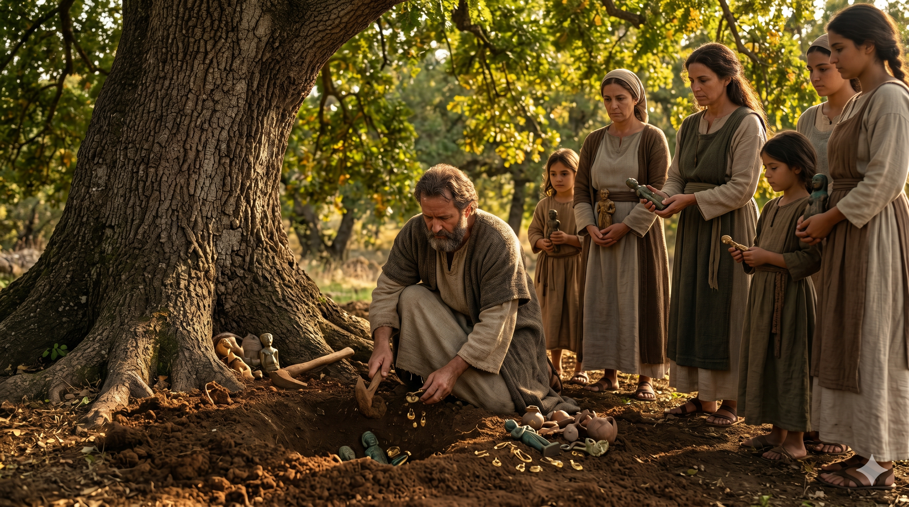

벧엘의 돌단 앞에서 기도하는 야곱과 그 가족들 — 30년 만에 돌아온 첫사랑의 자리
하나님이 야곱에게 이르시되 일어나 벧엘로 올라가서 거기 거주하며 네가 네 형 에서의 낯을 피하여 도망하던 때에 네게 나타났던 하나님께 거기서 제단을 쌓으라 … 야곱이 밧단아람에서 돌아오매 하나님이 다시 야곱에게 나타나사 그에게 복을 주시고 그에게 이르시되 네 이름이 야곱이지마는 네 이름을 다시는 야곱이라 부르지 않겠고 이스라엘이 네 이름이 되리라 하시고 그가 그의 이름을 이스라엘이라 부르시고 — 창세기 35:1, 9–10
세겜에서 디나 사건과 두 아들의 폭력으로 가문이 흔들리던 때, 하나님은 야곱에게 "벧엘로 올라가라"고 명령하셨습니다. 벧엘은 야곱이 형 에서를 피해 도망하던 시절, 하늘 사닥다리의 환상을 보며 하나님을 처음 인격적으로 만났던 곳입니다(창 28장). 그곳에서 야곱은 "여호와께서 과연 여기 계시거늘 내가 알지 못하였도다"고 고백했었습니다. 30년의 세월이 흐른 지금, 하나님은 야곱을 다시 그 첫사랑의 자리로 부르십니다. 벧엘로의 귀환은 단순한 지리적 이동이 아니라 영적 원점 회귀였습니다.
야곱은 벧엘로 가기 전에 먼저 집안의 이방 신상들을 모두 제거하고 옷을 갈아입게 했습니다(창 35:2). 이는 자신과 가족의 정결을 준비하는 행위였습니다. 그런 후 벧엘에 도착한 야곱에게 하나님은 다시 나타나셔서 언약을 새롭게 하시고 그의 이름을 이스라엘로 재확증하셨습니다. 얍복강에서 받은 그 이름이 이제 공적으로, 공동체 안에서, 그리고 하나님의 임재의 자리에서 다시 선포된 것입니다. 언약은 한 번 맺는 것으로 끝나지 않습니다. 하나님은 우리 인생의 굽이마다 그 언약을 새롭게 확증해 주심으로 우리를 붙드십니다.

상수리나무 아래 가족의 우상들을 묻는 야곱 — 정결을 위한 거룩한 단절
인생이 복잡해지고 상처가 쌓일 때, 하나님은 우리를 "첫사랑의 자리"로 부르십니다. 처음 예수님을 만났던 그 감격, 처음 기도의 응답을 받았던 그 자리, 처음 하나님의 부르심을 확신했던 그 순간으로 돌아가는 것 — 이것이 영적 회복의 시작입니다. 오늘 당신의 벧엘은 어디입니까? 너무 바쁘고 너무 지쳐서 그 자리를 잊고 살지 않았습니까? 하나님이 "일어나 벧엘로 올라가라"고 말씀하실 때, 그것은 우리를 향한 회복의 초청입니다.
벧엘로 돌아가기 전에 야곱이 먼저 이방 신상을 제거한 것을 주목하십시오. 영적 회복에는 거룩한 단절이 필요합니다. 우리 마음과 삶에 은근히 자리 잡은 우상들 — 돈, 인정, 불안한 관계, 오래된 중독 — 이것들을 붙잡고서는 벧엘에 들어갈 수 없습니다. 옷을 갈아입는 것처럼, 태도와 습관을 새롭게 하며 하나님 앞으로 나아가는 결단이 필요합니다. 그러면 하나님은 반드시 다시 나타나십니다. 첫사랑보다 더 깊은 만남으로.
하나님은 오늘도 당신에게 "벧엘로 돌아오라"고 말씀하십니다.
우상을 묻고, 옷을 갈아입고, 첫사랑의 자리로 올라가십시오.
30년이 지나도 하나님은 그곳에서 여전히 당신을 기다리고 계십니다.